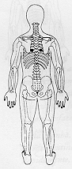
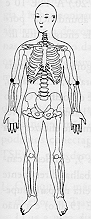

Travas de Segurança da Energia 9 - Segunda Profundidade
|
 |
TSE 9 Colocar a M.d. no meio das costas, entre a parte inferior da omoplata esquerda e a coluna TSE 9. ou
Coloque as mãos nas dobras externas dos cotovelos do lado do polegar em ambos os braços TSE 19. ® . |
 |
Notas:1 - M.d. = mão direita M.e. = mão esquerda
2 - Tocar a área indicada, com a ponta dos dedos da mão, durante
alguns minutos ou até sentir uma pulsação rítmica.
3 - Não precisamos nos preocupar em demasia com a precisão da
área indicada, pois cada trava de segurança da energia tem uma
abragência de uns sete centímetros em torno de si.